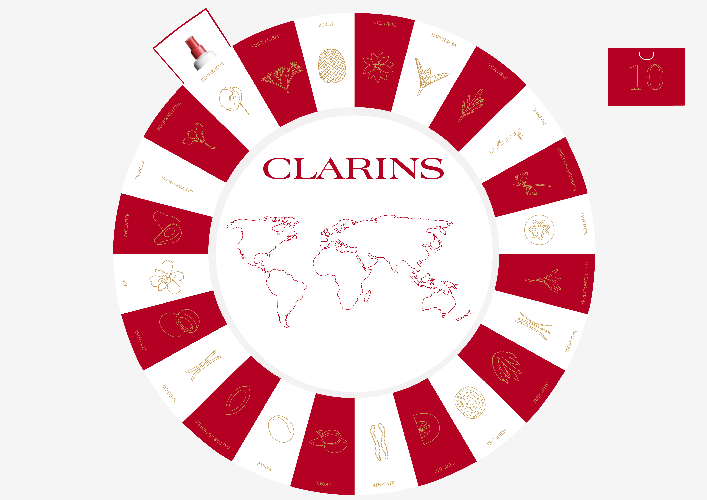
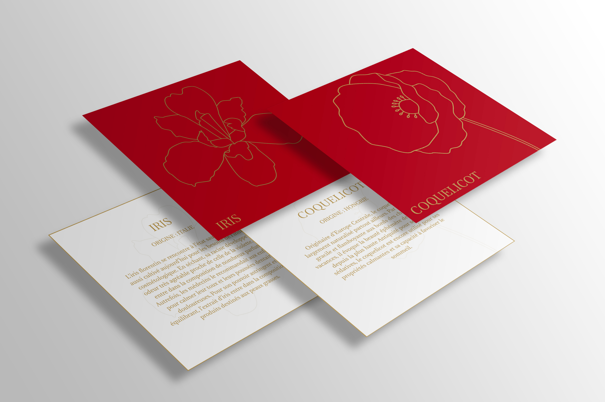

Clarins

La marque CLARINS souhaite créer un calendrier de l’avent pour noël 2021. Celui-ci représentera le tour du monde en 24 étapes par le père noël avant de livrer ses cadeaux. A chaque étape on retrouvera dans la case correspondante une punaise dorée pour que la consommatrice la plante dans la carte du monde au bon endroit , qui sera defini par la carte explicative de l’ingrédient. Une fois le calendrier de l’avent fini, il peut être réutilisé grâce aux boîtes pour ranger du maquillage, bagues, bracelets ou autre mais surtout la partie map monde à l’aide d’un fil tiré on peut l’utiliser pour poser des bijoux comme des boucles d’oreilles ou des bracelets.

